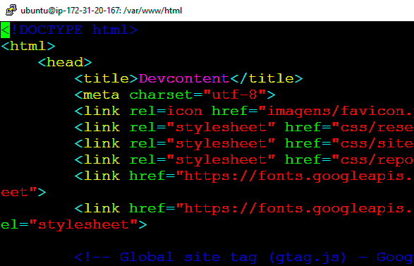

A necessidade da compreensão sobre responsividade de tela e como é uma boa prática para desenvolvimento de uma página na internet.

A importância sobre como proceder para aplicação de resultados e também toda a teoria necessária com auxílio de um exímio profissional chamado professor.

Você terá exercícios para praticar sua própria página e como alguns alunos descobrir se gosta de front-end e mesmo caso não goste saberá como funciona e como poderá seguir quando solicitado.